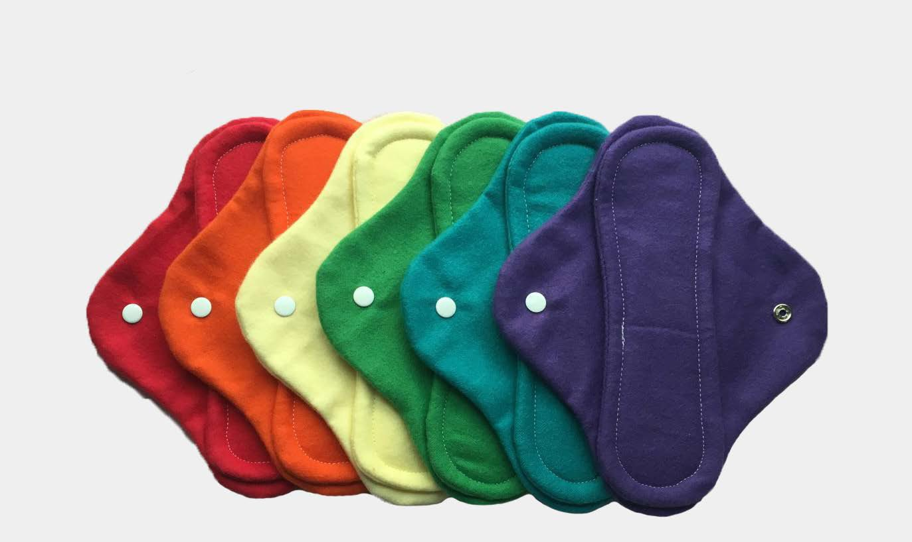
-
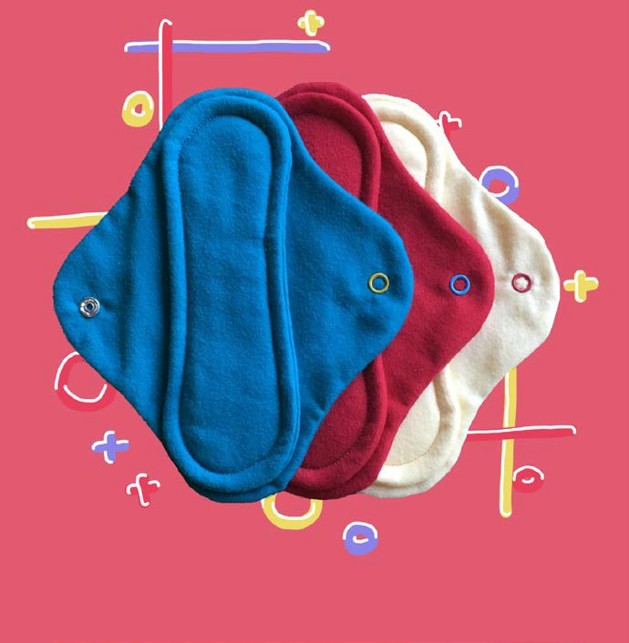
3-Pack Primary Colors Cloth Pads
$32 -
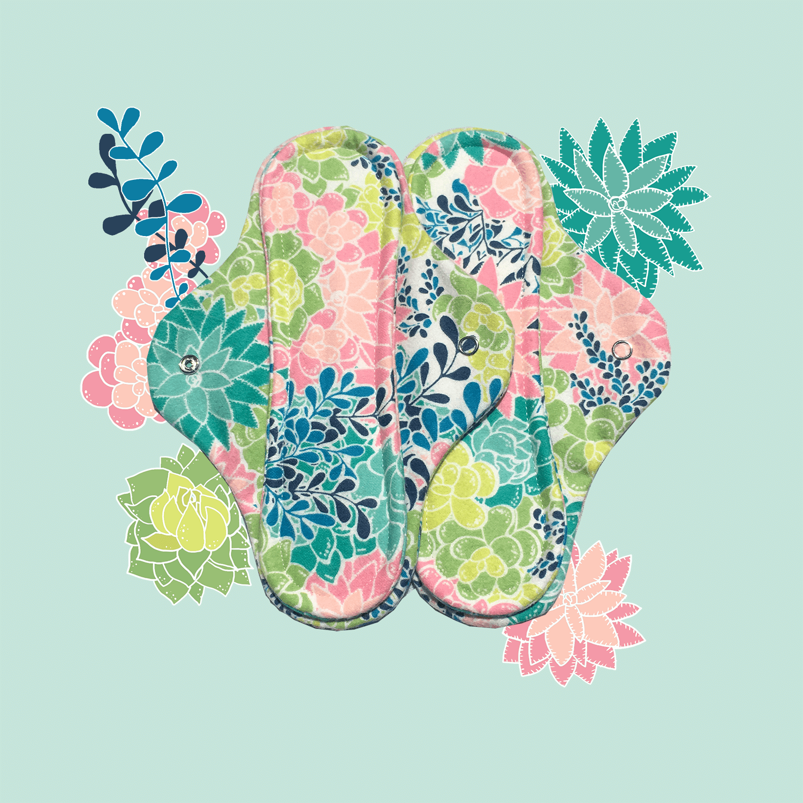
2-Pack Succulent Heavy Cloth Pads
$32 -
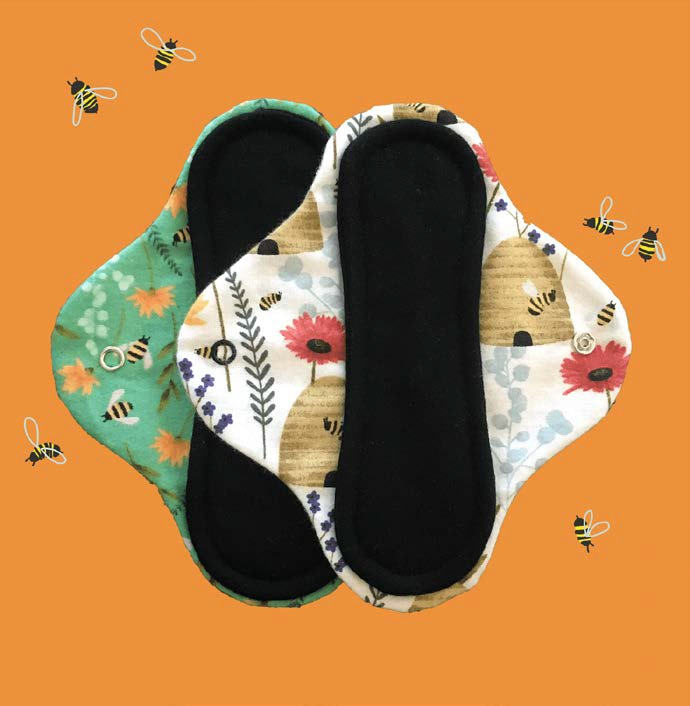
2-Pack Bees & Plants Heavy Cloth Pads
$22
-
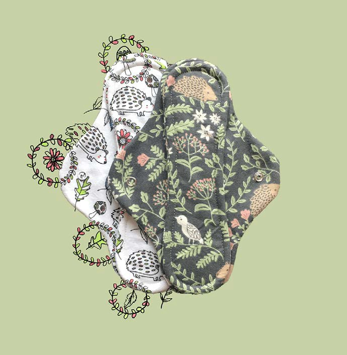
2-Pack Green Nature Cloth Pads
$22 -
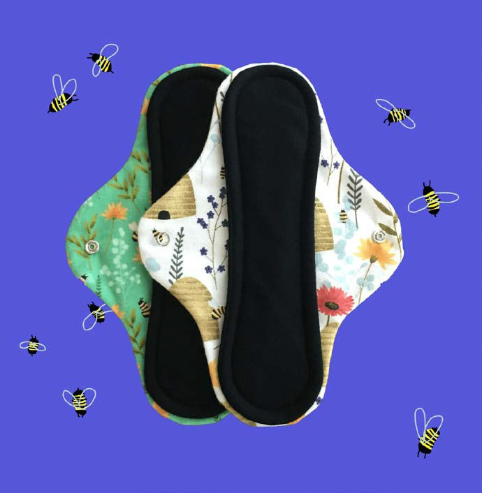
2-Pack Bees & Plants Cloth Pads
$22 -
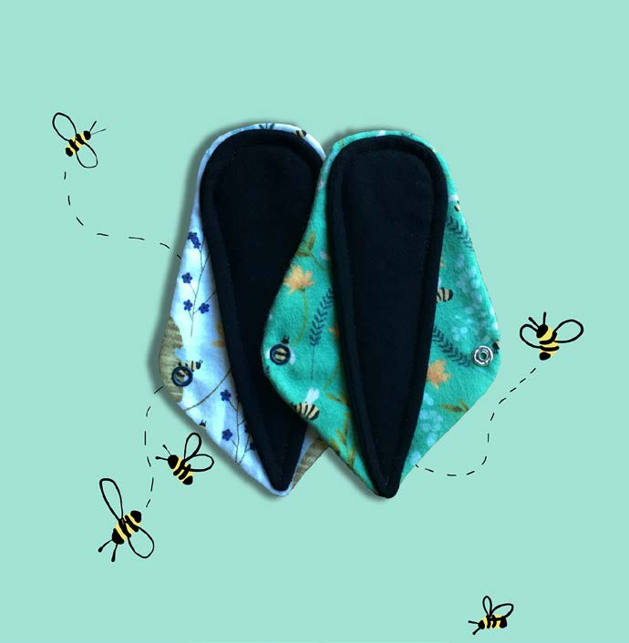
2-Pack Bees & Plants Thong Liner
$22
-
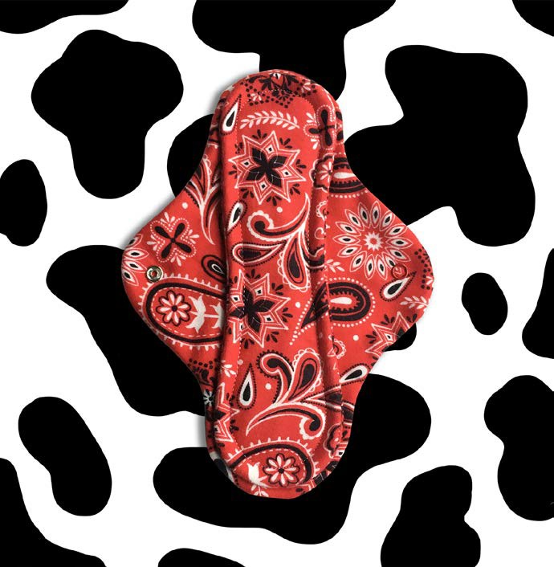
Cowboy Heavy Cloth Pad
$12 -
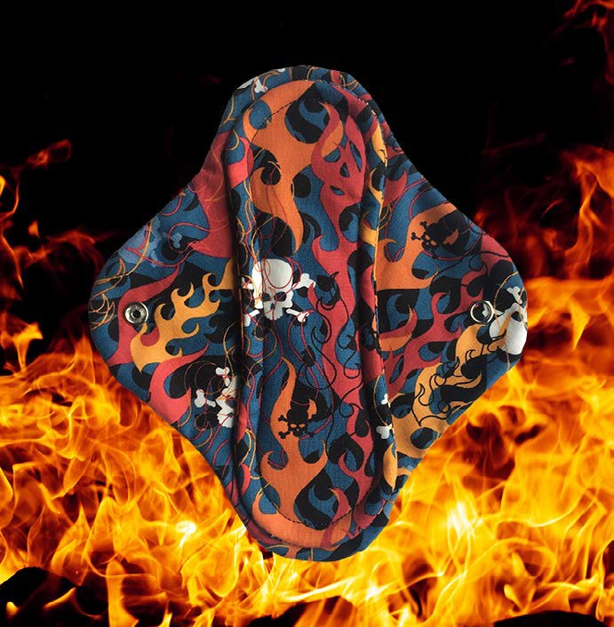
Flames Cloth Pad
$12 -
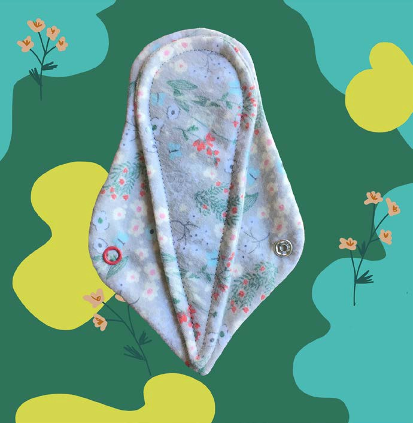
Garden Cloth Thong Liner
$10
-
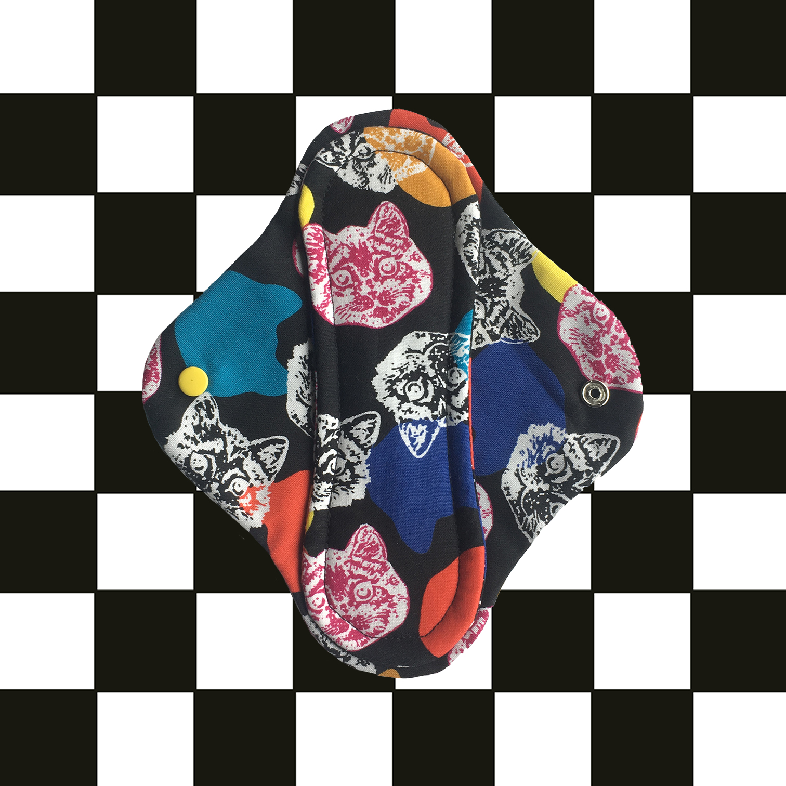
Cat Party Cloth Pad
$12 -
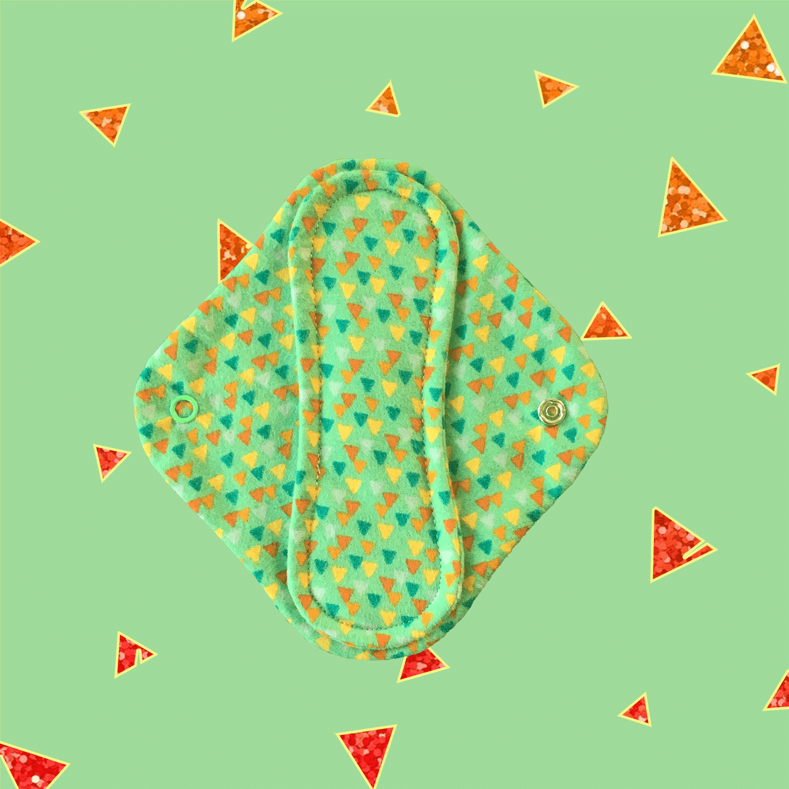
Geometric Cloth Pad
$12 -
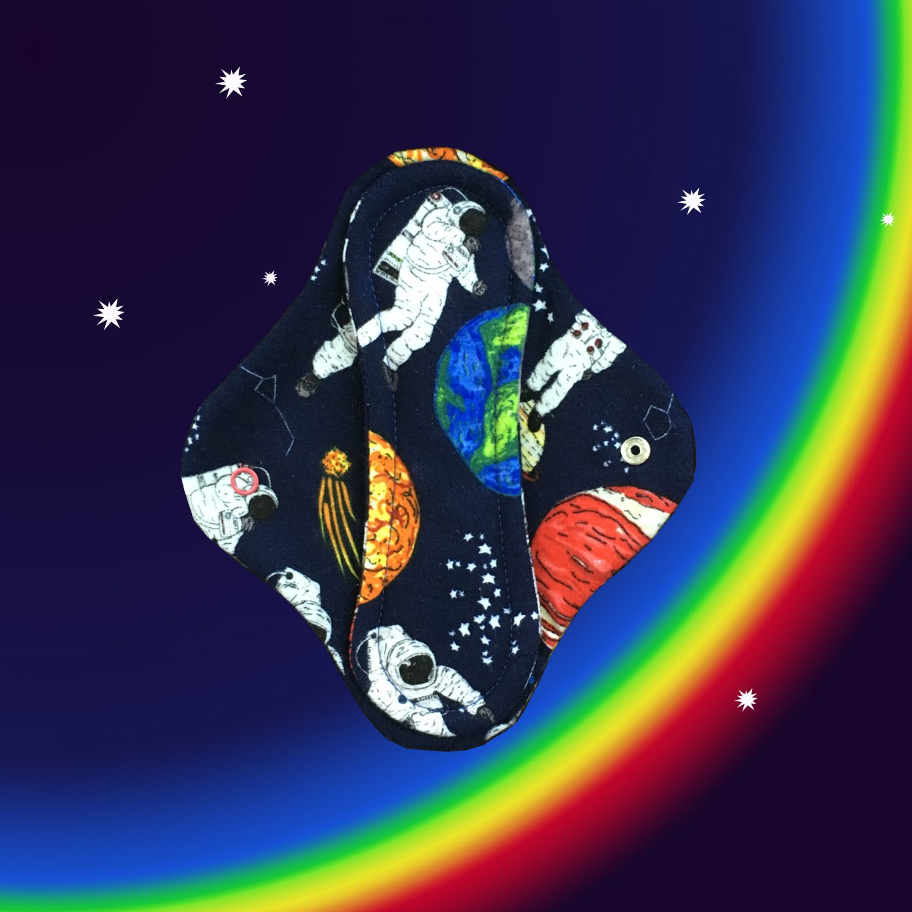
Space Cloth Pad
$12
ABOUT MOODY V
Moody V is a queer-owned Portland business that’s sole purpose is to provide people who have periods with a safe,
comfy, cool-lookin, affordable, sustainable option for menstrual products. These cloth pads are kickass reusable
alternatives to disposable pads.
You won’t regret switching, friend!
Meet Your Padmaker: Kay Butler made her first reusable pad in 2017 when she was looking for alternatives to disposables. When she took that cloth pad on it’s first test-drive, she whispered to herself, “Hell yeah”, and Moody V was born.
Moody V’s got options!
The classic, regular absorbency pads are made of 100% cotton flannel and cotton terry cloth (towel material) for absorbency. Cotton is a breathable fabric that allows menstrual fluid to dry while you’re still wearing the pad. That means less odor, less retained heat, and a dryer, more comfortable pad.
The next level up on absorbency are the heavy absorbency pads. These are made of the same stuff as the regular cloth pads, but they’re longer and, in the pad core, have the same PUL lining that is used in cloth diapers.
You won’t regret switching, friend!
Meet Your Padmaker: Kay Butler made her first reusable pad in 2017 when she was looking for alternatives to disposables. When she took that cloth pad on it’s first test-drive, she whispered to herself, “Hell yeah”, and Moody V was born.
Moody V’s got options!
The classic, regular absorbency pads are made of 100% cotton flannel and cotton terry cloth (towel material) for absorbency. Cotton is a breathable fabric that allows menstrual fluid to dry while you’re still wearing the pad. That means less odor, less retained heat, and a dryer, more comfortable pad.
The next level up on absorbency are the heavy absorbency pads. These are made of the same stuff as the regular cloth pads, but they’re longer and, in the pad core, have the same PUL lining that is used in cloth diapers.
FAQ
What makes cloth pads better than disposable pads?
Moody V regular absorbency pads are made with 100% cotton, which makes your down-there oh-so happy. Cotton is a breathable, moisture wicking fabric that creates a difficult environment for yucky bacteria like yeast to grow. Disposable pads are mostly synthetic, which is fully not nice to your body. They’re made out of bleached wood pulp and non-biodegradable materials.
Moody V leak-proof reusable pads have a polyurethane lining inside, which keeps moisture from leaking through. This lining is non-biodegradable. But remember, you’re not just gonna throw it away.
How long can I wear my Moody V pad?
That very much depends on your flow, you’ll know when it’s time to change it. On average, a person with a regular flow will use 3-4 pads per day, including the one worn to sleep.
How do I clean my pad?
Method 1: Rinse with cold water ASAP to reduce staining. Machine wash cold, then air dry thoroughly to maintain a nice shape.
Method 2: Machine wash cold, tumble dry.*
Method two gets your pad clean and ready to use again real quick, but may result in light staining and scrunching-up in the dryer. (Stains fade over time and you can stretch the pad gently with your hands to un-scrunch it.)
It’s recommended to avoid using fabric softener, as it makes fabric less absorbent.
Cloth pads contain several layers of fabric, which means it might need extra time drying. Make sure they’re super dry out of the dryer or dry them in the sun to prevent mildew. Do be aware that sun-drying can result in fabric discoloration.
What is a Moody V pad made of?
The regular absorbency pads are made with cotton flannel and cotton terry cloth (like a towel material). Ugh! So simple! Love that! The leakproof pads are made with cotton flannel, cotton terry cloth, and polyurethane laminate.
Moody V regular absorbency pads are made with 100% cotton, which makes your down-there oh-so happy. Cotton is a breathable, moisture wicking fabric that creates a difficult environment for yucky bacteria like yeast to grow. Disposable pads are mostly synthetic, which is fully not nice to your body. They’re made out of bleached wood pulp and non-biodegradable materials.
Moody V leak-proof reusable pads have a polyurethane lining inside, which keeps moisture from leaking through. This lining is non-biodegradable. But remember, you’re not just gonna throw it away.
How long can I wear my Moody V pad?
That very much depends on your flow, you’ll know when it’s time to change it. On average, a person with a regular flow will use 3-4 pads per day, including the one worn to sleep.
How do I clean my pad?
Method 1: Rinse with cold water ASAP to reduce staining. Machine wash cold, then air dry thoroughly to maintain a nice shape.
Method 2: Machine wash cold, tumble dry.*
Method two gets your pad clean and ready to use again real quick, but may result in light staining and scrunching-up in the dryer. (Stains fade over time and you can stretch the pad gently with your hands to un-scrunch it.)
It’s recommended to avoid using fabric softener, as it makes fabric less absorbent.
Cloth pads contain several layers of fabric, which means it might need extra time drying. Make sure they’re super dry out of the dryer or dry them in the sun to prevent mildew. Do be aware that sun-drying can result in fabric discoloration.
What is a Moody V pad made of?
The regular absorbency pads are made with cotton flannel and cotton terry cloth (like a towel material). Ugh! So simple! Love that! The leakproof pads are made with cotton flannel, cotton terry cloth, and polyurethane laminate.
CONTACT US